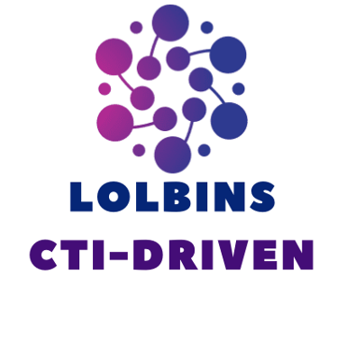

Each binary links to its ATT&CK software entry, or to the technique that describes its abuse.
No binary matches that filter.
Loading LOLBins...

LOLBins CTI-Driven
Each binary links to its ATT&CK software entry, or to the technique that describes its abuse.
No binary matches that filter.
Loading LOLBins...